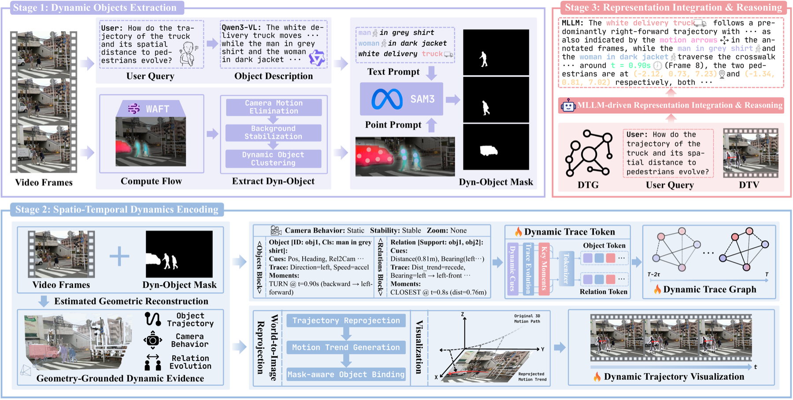
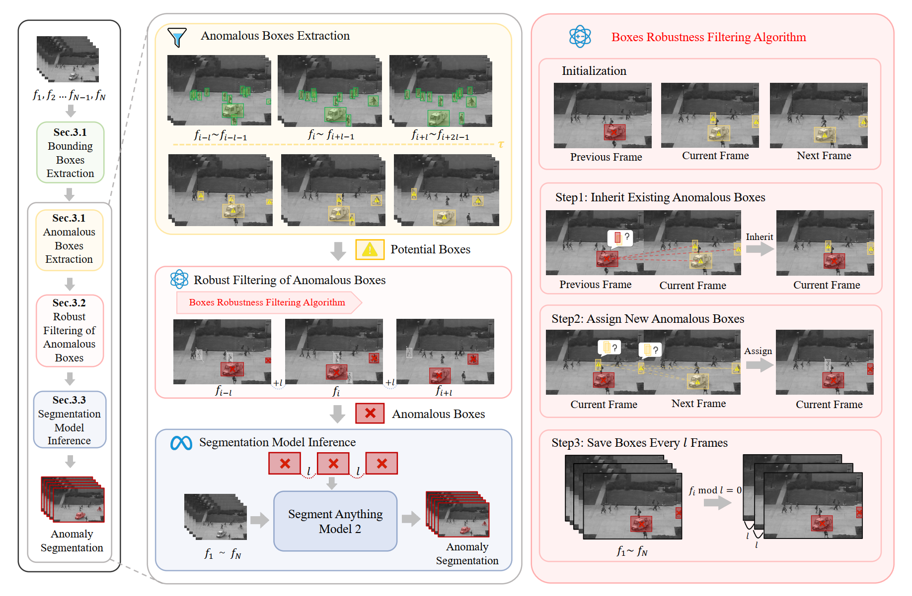
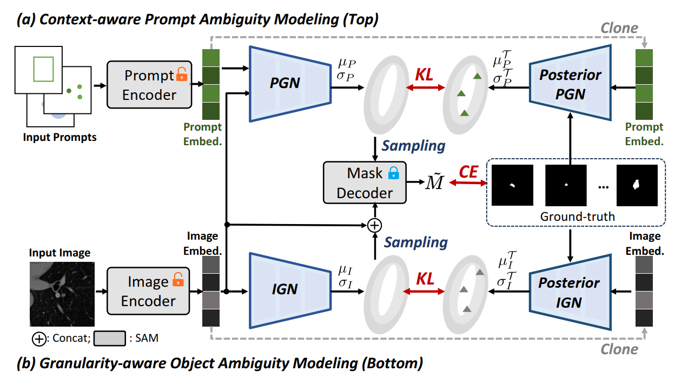

Embodied agents
Embodied AI & Robotic Agents
VLM-based robot agents with persistent spatio-temporal memory for long-horizon manipulation, and diagnostic evaluation of embodied mind, physical action, and their composition.
黄誉之 · Ph.D. Student @ mmlab@SIGS, Tsinghua SIGS
About · Bio
I am a first-year Ph.D. student in the Self-Evolving Embodied Agents Group at , Tsinghua Shenzhen International Graduate School, co-supervised by Prof. Zhi Wang and Dr. Jingyan Jiang. My research focuses on Embodied AI, 4D World Modeling, Multimodal Dynamic Reasoning, and Vision Foundation Models, toward open-world embodied intelligence.
I was selected for the 2026 Young Science and Technology Talent Cultivation Program (Doctoral Track) of the China Association for Science and Technology (CAST) and received the Tsinghua Future Scholar Scholarship. Before that, I received my master's degree from the School of Informatics at Xiamen University, where I was a member of the SmartDSP Lab advised by Prof. Xinghao Ding and Prof. Yue Huang.
If you are interested in academic collaboration, feel free to email me at yz_huang13@163.com.
Research · Four directions
Embodied agents
VLM-based robot agents with persistent spatio-temporal memory for long-horizon manipulation, and diagnostic evaluation of embodied mind, physical action, and their composition.
4D worlds
Physical-scale multimodal 4D modeling of real-world video, and object-centric memory compression for streaming perception.
Dynamic reasoning
Evaluating and improving how multimodal models perceive localized dynamics, track dynamic evidence, and reason about observed and future 4D scenes.
Robust perception
Foundation-model-based perception under anomalous or ambiguous visual conditions, from track-centric video anomaly understanding to ambiguity-aware segmentation with SAM.
Publications · 14 papers and preprints

TAU-Bench is a track-centric benchmark for jointly evaluating anomaly instance tracking and fine-grained video anomaly understanding.

ChainVLA is a 1.2B-parameter VLA policy that connects successive action queries through a joint, revisable execution state, carrying both task progress and unfinished motion across long-horizon manipulation.

DynTrace is a training-free framework that tracks continuous dynamic object evidence for coherent 4D reasoning. It combines geometry-informed trajectory visualization with a structured Dynamic Trace Graph.
RoboStream weaves spatio-temporal reasoning with persistent memory into VLM robotic planners, supporting long-horizon object grounding and causal state tracking.
RobotWorld investigates how general-purpose multimodal agents transfer their digital tool-use capabilities to physical task execution through robot interfaces. Its 84 simulation tasks span manipulation, mobile manipulation, locomotion, driving, and aerial control, with explicit interaction budgets and executable success checks. Agents can construct sophisticated perception and control workflows involving segmentation, camera calibration, spatial estimation, and dynamics computation, yet these capabilities do not consistently compose into successful behavior. Execution-trace analysis exposes lost object states, ineffective action correction, late recovery, and mistaken completion judgments, providing concrete targets for more reliable physical-world agents.
Robot foundation policies predict action chunks, but how many actions to execute before replanning depends on the current task phase. ChunkTrust treats the execution horizon as a latent variable inferred from action-expert evidence. Its training-free Action-aware Horizon Selector (AHS) combines intra-chunk spectral stability with inter-chunk motion continuity, while an online Beta posterior with kernel forgetting tracks horizon preferences across replans. An optional Query-based Horizon Adapter (QHA) learns a context-conditioned prior while keeping the base policy frozen. AHS improves success across evaluated RoboTwin2.0 and RoboCasa GR1 Tabletop configurations, and raises the mean normalized process score on four real-world household tasks from 50.4% to 57.5%.


Zip-VGGT introduces object-centric spatiotemporal KV compression for streaming vision, preserving geometric topology and dynamic trajectories while controlling long-term memory use.

Main Conference · DataMFM Workshop Oral · 4D Vision Workshop
Dyn-Bench evaluates whether MLLMs can perceive, track, and reason about evolving 4D scenes using 1K videos, 7K VQA pairs, and 3K dynamic-object grounding pairs.
DynamicVerse is a physical-scale multimodal 4D modeling framework for real-world video, combining metric geometry, motion, masks, and descriptive captions.

TAO reframes granular video anomaly detection as pixel-level tracking of anomalous objects, linking anomaly scoring with segmentation and tracking for precise long-video localization.

This work turns SAM's prompt sensitivity into an advantage for ambiguous segmentation, enabling diverse, plausible, and controllable predictions.

P²SAM models ambiguous medical-image segmentation through a probabilistic prompt space built on SAM, improving accuracy and diversity with limited annotations.
News · Latest updates
The Mind2Act World technical report is out, with benchmark code and training demonstrations available.
Pros4D is available as a preprint on latent 4D world modeling for dynamic spatial reasoning.
Selected for the Young Science and Technology Talent Cultivation Program (Doctoral Track) of the China Association for Science and Technology (CAST).
RobotWorld was released as a preprint, benchmarking multimodal agents for robot use.
ChunkTrust was released as a preprint on adaptive execution horizons for robot policies.
Two papers were accepted at ACM MM 2026!
Thinking in Dynamics was selected for an oral presentation at the CVPR 2026 DataMFM Workshop and was also accepted to the CVPR 2026 4D Vision Workshop.
Awarded the Tsinghua Future Scholar Scholarship, a highly selective university-level fellowship recognizing academic potential; only four students from Tsinghua SIGS were selected in 2026.
RoboStream was accepted at ECCV 2026.
Thinking in Dynamics (Dyn-Bench) was accepted to the CVPR 2026 Main Conference.
DynamicVerse was accepted at NeurIPS 2025.
Track Any Anomalous Object was accepted at CVPR 2025.
Flaws can be Applause was accepted at NeurIPS 2024.
P²SAM was accepted at ACM MM 2024.
Education · Internship

Ph.D. Student, mmlab@SIGS, Self-Evolving Embodied Agents Group
Advised by Prof. Zhi Wang and Dr. Jingyan Jiang

Master's Degree, School of Informatics, SmartDSP Lab
Advised by Prof. Xinghao Ding and Prof. Yue Huang

Bachelor's Degree

Honors · Academic service
CAST Young Science and Technology Talent Cultivation Program (Doctoral Track)
2026Tsinghua Future Scholar Scholarship, four recipients from Tsinghua SIGS
2026National Scholarship
2026Outstanding Graduate
2026Huang Xilie University-Level Scholarship
2025University Level Outstanding Student Award
2024Meritorious Winner, Mathematical Contest in Modeling (MCM)
2024AAAI Conference on Artificial Intelligence, Program Committee
2026Conference on Neural Information Processing Systems (NeurIPS), Reviewer
2024, 2025International Conference on Machine Learning (ICML), Reviewer
2025International Conference on Learning Representations (ICLR), Reviewer
2025